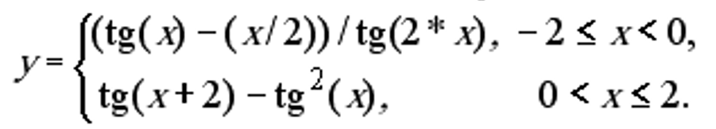
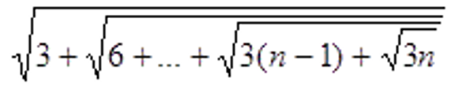

Лабораторна робота №2
Рекурентні співвідношення для тригонометричних, експоненціальних функцій та ланцюгові дроби
Варіант №9
Виконав студент IV-того курсу
Групи ІПЗ-42
Ковтун Микита
Зміст
Мета
Умова задачі
Структура програми
Обгрунтування вибору середовища
Код програми в коментарях
Посилання на проект з вихідним кодом
Скріншоти результатів
Висновки
Мета роботи
Опанувати теоретичні основи застосування рекурентних співвідношень для обчислення тригонометричних, експоненціальних, степеневих функцій та розробити програми функціональними мовам програмування для обчислення їх значень
Умова задачі
9.1. Обчислити значення функції у, розвинувши функцію tg(x) у ряд Тейлора подавши її через sin(x) та cos(x).. Аргумент х змінюється від -3 до 3 з кроком 0.5. Визначити похибку

9.2. Обчислити для заданого натурального числа n вираз:

Структура програми (HIPO діаграма)

Обгрунтування вибору середовища та мови функціонального програмування
Онлайн середовище jdoodle та мова функціонального програмування Scheme були обрані через:
1) Мова Scheme, що є діалектом мови LISP, проста і популярна мова функціонального програмування
2) В лекціях функціональне програмування розглядається на прикладах коду Scheme
3) Середовище jdoodle не потрібно встановлювати на комп'ютер.
Код програми з коментарями
Завдання №1
(define (factorial n) ; Функція для обчислення факторіалу
(if (= n 0)
1
(* n (factorial (- n 1)))
)
)
; СИНУС
; функція яка рахує наступну наближену суму членів рядку Тейлора
; для знаходження синуса.
(define (next-sum-sin sum k x)
(+ sum (* (expt -1 k) (/ (expt x (+ 1 (* 2 k))) (factorial (+ 1 (* 2 k))))))
)
; внутрішня функція для синуса, яка необхідна для задавання
; параметрів
(define (inner-sin x sum k acc)
(if (< (abs (- sum (next-sum-sin sum k x))) acc) ; умова виходу із рекурсії
(next-sum-sin sum k x)
(inner-sin x (next-sum-sin sum k x) (+ k 1) acc)
)
)
; Функція для обчислення синуса із заданою точністю
(define (my-sin x)
(inner-sin x 0 0 0.00001)
)
; КОСИНУС
; функція яка рахує наступну наближену суму членів рядку Тейлора
; для знаходження косинуса.
(define (next-sum-cos sum k x)
(+ sum (* (expt -1 k) (/ (expt x (* 2 k)) (factorial (* 2 k)))))
)
; внутрішня функція для синуса, яка необхідна для задавання
; параметрів
(define (inner-cos x sum k acc)
(if (< (abs (- sum (next-sum-cos sum k x))) acc) ; умова виходу із рекурсії
(next-sum-cos sum k x)
(inner-cos x (next-sum-cos sum k x) (+ k 1) acc)
)
)
; Функція для обчислення синуса із заданою точністю
(define (my-cos x)
(inner-cos x 0 0 0.000001)
)
; ТАНГЕНС
; Функція для обчислення тангенса
(define (my-tan x)
(/ (my-sin x) (my-cos x))
)
; Функція, яка обчислює з похибкою
(define (y x tg)
(cond ((and (< x 0) (or (< -2 x) (= -2 x)))
(/ (- (tg x) (/ x 2)) (tg (* 2 x))))
((and (< 0 x)(or (< x 2) (= x 2)))
(- (tg (+ x 2)) (expt (tg x) 2))))
)
(define (task-1 start end step)
(if (not (> start end))
(begin (display start)
(display "\t")
(display (y start my-tan))
(display "\t")
(display (if (or (eq? (y start my-tan) (y 3 tan))
(eq? (y start tan) (y 3 tan))
)
"\t\t---"
(abs (- (y start my-tan) (y start tan))) ))
(newline)
(task-1 (+ start step) end step))
)
)
(display "\tx\t\t\t\ty(x)\t\t\tпохибка\n")
(task-1 -2.0 2.0 0.5)
Завдання №2
(define (next-sqrt x y)
(* (/ 1 2) (+ y (/ x y)))
)
(define (inner-sqrt x y acc)
(if (< (abs (- (next-sqrt x y) y)) acc)
(next-sqrt x y)
(inner-sqrt x (next-sqrt x y) acc)
)
)
(define (my-sqrt x)
(inner-sqrt x 1 0.000001)
)
(define (inner-task-2 n max-n)
(if (> n max-n)
0.0
(my-sqrt (+ (* 3 n) (inner-task-2 (+ n 1) max-n)))
)
)
(define (task-2 n)
(inner-task-2 1 n)
)
(display (task-2 3.0))
Посилання на проект з вихідним кодом
Код завдання №1 в jdoodleКод завдання №2 в jdoodle
Скрін-шот результатів

Скрін-шот №1

Скрін-шот №2
Висновок
В результаті виконання даної лабораторної роботи було виконано два завдання. Перше з них вимагало реалізації тригонометричних функцій використовуючи ряд Тейлора. Друге завдання полягало в реалізації звичайної рекурсії для підрахунку математичного виразу, але для цього також була розроблена функція яка підраховувала квадратний корінь числа за допомогою суми членів ряду Тейлора. Окрім цього для другого завдання було побудовано таблицю яка містить три колонки, а саме - значення аргументу, значення функції та величину похибки.